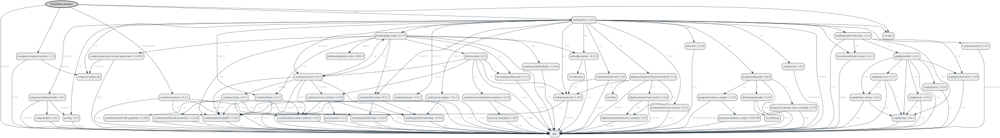

Getting Started
Requirements
- PHP 7.4 or greater
- ext-phar
- PHPUnit 9 or greater (if you want to run unit tests)

Generated with fork of clue/graph-composer. Read more on PR request.
Installation
With Composer
Install the BOX Manifest with Composer. If you don't know yet what is composer, have a look on introduction.
composer require bartlett/box-manifest
With Git
The BOX Manifest can be directly used from GitHub by cloning the repository into a directory of your choice.
git clone https://github.com/llaville/box-manifest.git
Quick Started
Basic Usage
Declare your manifest format in your box.json or box.json.dist configuration file (metadata setting).
basic simple text :
{
"metadata": "Bartlett\\BoxManifest\\Composer\\ManifestFactory::toText"
}
Then build your PHP Archive (PHAR) via the bin/box compile command.
Examples
Manifest of bartlett/box-manifest in TEXT format
bartlett/box-manifest: dev-master
amphp/amp: v2.6.1
amphp/byte-stream: v1.8.1
amphp/parallel: v1.4.1
amphp/parallel-functions: v1.1.0
amphp/parser: v1.0.0
amphp/process: v1.1.3
amphp/serialization: v1.0.0
amphp/sync: v1.4.2
composer/package-versions-deprecated: 1.11.99.5
composer/pcre: 1.0.1
composer/semver: 3.2.9
composer/xdebug-handler: 3.0.1
cweagans/composer-patches: 1.7.2
fidry/console: 0.2.0
humbug/box: 3.16.0
humbug/php-scoper: 0.17.0
jetbrains/phpstorm-stubs: v2021.3
justinrainbow/json-schema: 5.2.11
laravel/serializable-closure: v1.1.0
nikic/iter: v2.2.0
nikic/php-parser: v4.13.2
paragonie/constant_time_encoding: v2.5.0
paragonie/pharaoh: v0.6.0
paragonie/random_compat: v9.99.100
paragonie/sodium_compat: v1.17.0
phpdocumentor/reflection-common: 2.2.0
phpdocumentor/reflection-docblock: 5.3.0
phpdocumentor/type-resolver: 1.6.0
psr/container: 1.1.2
psr/event-dispatcher: 1.0.0
psr/log: 1.1.4
seld/jsonlint: 1.8.3
symfony/console: v5.4.3
symfony/deprecation-contracts: v2.5.0
symfony/event-dispatcher-contracts: v2.5.0
symfony/filesystem: v5.4.3
symfony/finder: v5.4.3
symfony/polyfill-ctype: v1.24.0
symfony/polyfill-intl-grapheme: v1.24.0
symfony/polyfill-intl-normalizer: v1.24.0
symfony/polyfill-mbstring: v1.24.0
symfony/polyfill-php80: v1.24.0
symfony/polyfill-php81: v1.24.0
symfony/process: v5.4.3
symfony/serializer: v5.4.3
symfony/service-contracts: v2.5.0
symfony/string: v5.4.3
symfony/var-dumper: v5.4.3
thecodingmachine/safe: v1.3.3
ulrichsg/getopt-php: v3.4.0
webmozart/assert: 1.10.0
webmozart/path-util: 2.3.0